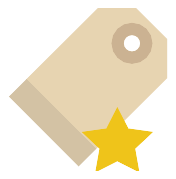

<!--
  Generated template for the ContactPage page.

  See http://ionicframework.com/docs/components/#navigation for more info on
  Ionic pages and navigation.
-->
<ion-header>

  <ion-navbar color="dark">
    <ion-title>{{title}}</ion-title>
	<ion-buttons end>
      <button ion-button icon-only>
        <ion-icon name="ios-person-add-outline"></ion-icon>
      </button>  
    </ion-buttons>   
  </ion-navbar>
</ion-header>


<ion-content class="bg-color">
	<ion-searchbar></ion-searchbar>
	<ion-list>
		<button ion-item>
		    <ion-avatar item-start>
		       
		    </ion-avatar>
	  		新的朋友
  		</button>
  		<button ion-item>
		    <ion-avatar item-start>
		       
		    </ion-avatar>
	  		群聊
  		</button>
  		<button ion-item>
		    <ion-avatar item-start>
		       
		    </ion-avatar>
	  		标签
  		</button>
  		<button ion-item>
		    <ion-avatar item-start>
		       
		    </ion-avatar>
	  		公众号
  		</button>


	    <ion-item-group>	
	    	<ion-item-divider color="light">J</ion-item-divider>
	  		<button ion-item *ngFor="let item of contacts" (click)="contactClicked(item)">
			    <ion-avatar item-start>
			       
			    </ion-avatar>
			    {{item.user.name.last | firstCharFormat}}
			    	{{' '}}
			    {{item.user.name.first | firstCharFormat}}
		    </button>
	  	</ion-item-group>
	</ion-list>
</ion-content>
